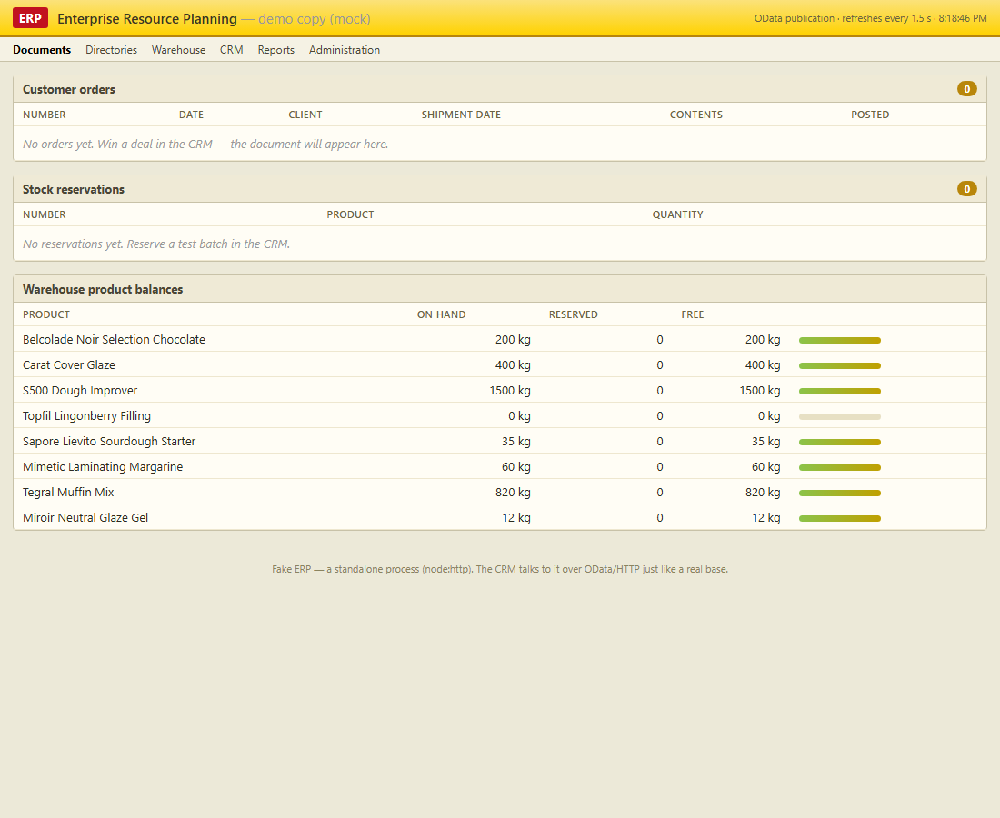

feat/mock-erp-odata · Closes #TBD · track "ERP / critical path to the demo" (#1 → #15)
tools/mock-erp/) — a separate process
(node:http, no new dependencies) that answers OData requests the same way a
real ERP publication does, and renders a recognizable yellow-gray "ERP" window with
auto-refresh.
ODataErpGateway to life — previously a stub that threw
NotImplementedError, now it makes real fetch calls + Basic auth +
parses OData JSON. The same code works against the fake ERP and a real one — only
ERP_BASE_URL changes.
| Aspect | Before | After |
|---|---|---|
| ERP data source in the demo |
Only the in-memory StubErpGateway (no "ERP" visible at all)
|
A separate "ERP" process over OData/HTTP + an ERP window where documents land |
ODataErpGateway |
All 7 methods threw NotImplementedError |
All 7 methods implemented via fetch (read/write the ERP) |
| Customer order | A STUB-1-2-style number in the CRM's memory |
A posted document SO-2026-XXXX in the ERP window, idempotent by key
|
| An ERP write failure | — |
A loud error (A18): no date → missing_required_field; ERP unreachable →
unavailable
|

Visible: order SO-2026-0030 (Union Grocery Wholesale, line items, "✓ posted");
reservation rez-0001 on Sapore starter culture; Sapore's stock shows "On hand 35
/ Reserved 10 / Free 25" (the free balance recalculated by the ERP).
npm run mock-erp → open http://127.0.0.1:8108/
(the ERP window).
.env: ERP_MODE=odata,
ERP_BASE_URL=http://127.0.0.1:8108, ERP_USERNAME=demo,
ERP_PASSWORD=demo.
npm run dev → open the CRM next to the ERP window.SO-2026-XXXX. Placing it again — the same number (no duplicate).
npm run verify green — 471 tests (92 files),
typecheck/lint/format clean. Live end to end: the real ODataErpGateway against a
running server — reading prices/stock/AR balance, history, a reservation 200→150, an order +
idempotency, an error with no date. The ERP window was captured in a browser (screenshot
above).
$metadata — only the adapter changes, the use-cases/screens
stay untouched.